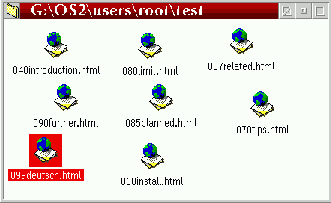

Funktionen "Ordna i rutn„t" „r lite sv†r att f”rklara. T„nk dig en mapp vars objekt „r
ordentligt tillr”rda: hur m†nga g†nger har du inte kommit p† dig sj„lv med att f”rs”ka ordna dessa
objekt under eller vid sidan av varandra?

Menyposten "Arrangera" hj„lper inte h„r, eftersom den ordnar om objekten helt och h†llet.
T„nk dig nu en upps„ttning av osynliga linjer med lika avst†nd utspridd ”ver mappens f”nster, vilka
kommer att attrahera objekten i det n„r du v„ljer "Ordna i rutn„t".
Menyposten "Ordna i rutn„t" „r endast synlig n„r f”ljande g„ller:
Notera: Med V0.81, har "Ordna i rutn„t" beteendet „ndrats n†got. Som standard, kommer
&xwp; bara att l†ta de aktuella valda objekten l†sas till rutn„tet. Emellertid, om du h†ller ner
Shift tangenten medan du v„ljer menyposten, kommer alla objekt att snappas upp
(som i tidigare versioner).